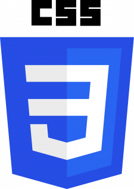

| Параметр | Код |
|---|---|
| Прозрачность | opacity: 0.5 |
| Тень блока | box-shadow: 0 0 10px black |
| Тень текста | text-shadow: 2px -4px 3px black |
| Округленая граница | border-radius: 20px |
| Градиентный фон | background: linear-gradient(to right, aqua, yellow) |
| Вывод фона под границами | background-clip: border-box |
| Область позиционирования фонового рисунка | background-origin: padding-box |
| Масштабирование фонового изображения | background-size: contain |
Изменение алгоритма расчета ширины и высоты элемента |
box-sizing: border-box |
| Количество колонок в многоколоночном тексте | column-count: 2 |
| Расстояние между колонками в многоколоночном тексте | column-gap: 4em |
| Отрисовка линии между колонками в многоколоночном тексте | column-rule: 3px solid green |
Оптимальная ширина колонки в многоколоночном тексте |
column-width: 5em |
| Универсальное свойство колонок | columns: 3 10em |
Переносы слов в блоке текста. Дабы сделать этот текст боль
|
hyphens: manual |
| Свойство overflow-x управляет отображением содержания блочного элемента по горизонтали, если контент целиком не помещается и выходит за область справа или слева от блока. Добавляет горизонтальную полосу прокрутки. | overflow-x: scroll; |
| Свойство overflow-y управляет отображением содержания блочного элемента по вертикали, если контент целиком не помещается и выходит за область сверху или снизу от блока. Добавляет вертикальную полосу прокрутки. | overflow-y: scroll |
| Указывает, можно ли пользователю изменять размеры текстового поля. | resize: verical |
Определяет параметры видимости текста в блоке, если текст целиком не помещается в заданную область.
|
text-overflow: ellipsis |
| Трансформирует элемент, в частности, позволяет его масштабировать, вращать, сдвигать, наклонять, а также комбинировать виды трансформаций.  | transform: rotate(15deg) |
Свойство word-break указывает, как делать перенос строк внутри слов,
которые не помещаются по ширине в заданную область.
|
word-break: break-all |
| Устанавливает направление текста на странице в IE. | writing-mode: bt-rl |